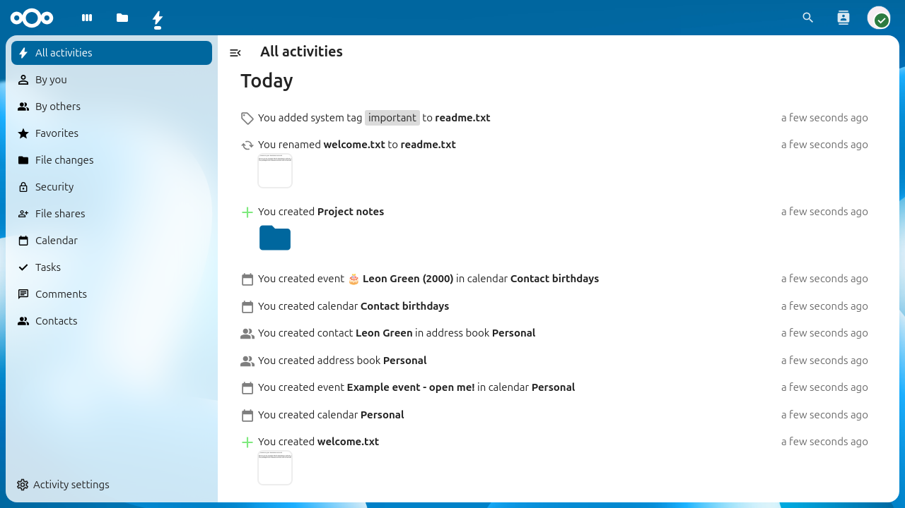
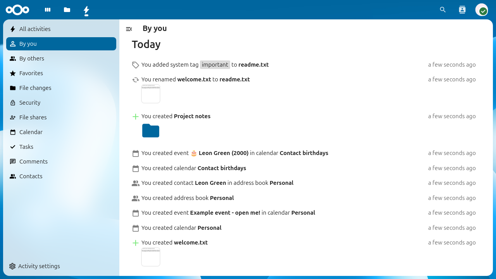
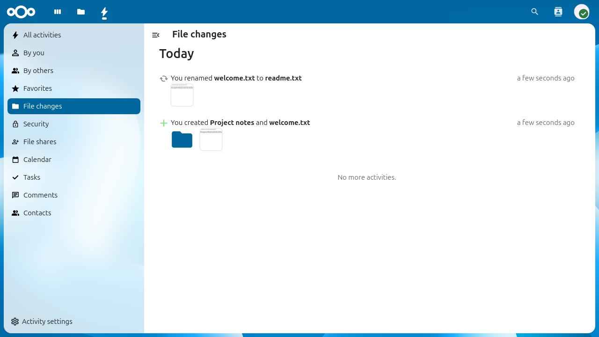
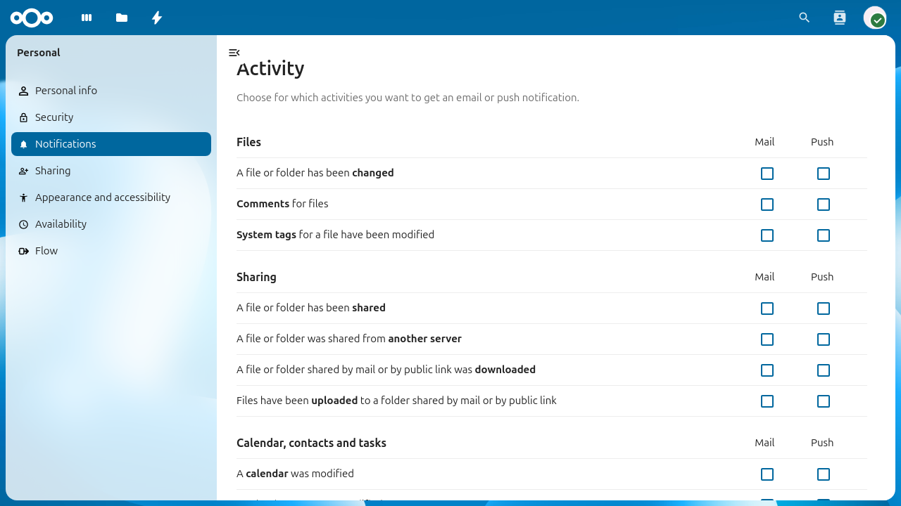

Использование приложения «События»
Приложение «События» отслеживает всё, что происходит в вашем Nextcloud. Оно записывает такие события, как изменения файлов, предоставление общего доступа, обновления календаря и другие, и даёт хронологический обзор: что и когда произошло.
Приложение «События» включено по умолчанию.

Лента событий со всеми недавними событиями.
Просмотр ленты событий
Чтобы открыть ленту событий, нажмите значок События на верхней панели навигации или перейдите в браузере по адресу /apps/activity.
В ленте показаны все события, сгруппированные по дням. Каждая запись показывает, что произошло, какой файл или объект затронут и как давно это случилось. Записи других приложений (например, «Календарь», «Контакты» или «Конференции») тоже появляются в ленте, если эти приложения установлены.
Фильтрация событий
Чтобы сузить ленту, используйте фильтры на левой боковой панели:
Все события — показываются все события.
Ваши события — только события, которые вызвали вы сами.
События других пользователей — только события, вызванные другими пользователями.
Изменения файлов — только события с файлами и папками (создание, изменение, удаление, переименование, перемещение).
Дополнительные фильтры могут появиться в зависимости от установленных на сервере приложений (например, Избранное, Календарь, Контакты).

Лента событий, отфильтрованная так, чтобы показывать только ваши собственные события.

Лента событий, отфильтрованная по изменениям файлов.
RSS-лента
Приложение «События» может отдавать вашу ленту событий в виде RSS-ленты, чтобы следить за событиями Nextcloud в любой программе для чтения лент.
Чтобы включить RSS-ленту:
Откройте приложение «События».
Нажмите Параметры событий внизу левой боковой панели.
Включите переключатель Включить RSS-ленту.
Скопируйте появившуюся ссылку на RSS-ленту.
Примечание
Ссылка на RSS-ленту содержит секретный токен. Не передавайте её другим: она открывает доступ к ленте событий без аутентификации.
Параметры уведомлений
Можно выбрать, о каких типах событий и как вас уведомлять. Чтобы настроить уведомления, откройте Параметры > Личные параметры > Уведомления.

Личные параметры уведомлений для приложения «События».
Параметры сгруппированы по категориям (например, Файлы, Общий доступ, Календарь, контакты и задачи). Для каждого типа событий можно включить:
Почтовые уведомления (по эл. почте)
Уведомления Push (на мобильных устройствах и ПК)
Установите или снимите соответствующие флажки, чтобы включить или отключить уведомления для каждого типа событий.
Частота уведомлений по эл. почте
Под таблицей уведомлений можно выбрать, как часто отправляются письма:
Сразу — письмо отправляется вскоре после каждого события.
Ежечасно — уведомления собираются и отправляются раз в час.
Ежедневно — одно письмо в день.
Еженедельно — одно письмо в неделю.
Ежедневная сводка событий
Можно включить ежедневную сводку: каждое утро на почту будет приходить письмо с обзором событий предыдущего дня. Это отдельный переключатель под параметром частоты уведомлений:
Чтобы включить её, установите флажок Отправлять ежедневную сводку событий по утрам.
Ежедневная сводка не зависит от уведомлений о каждом событии, настроенных выше, и удобно собирает все события в один обзор.